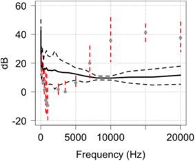
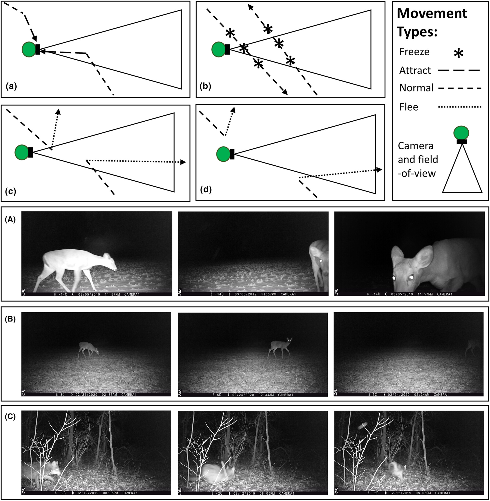
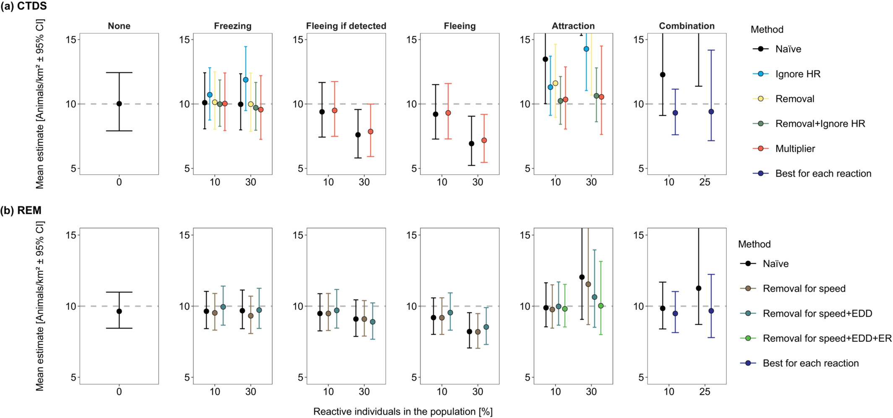

Species behaviour
(Investigative / Multiple species / Seasonal)#
Hint
Examples of comparable species that can be used to select the most appropriate option:
:
:
:
:
:
It’s important to consider how your Target Species may react to the camera being placed.
While remote cameras are fairly non-invasive survey method, their presence on the landscape, in and of itself, can alter the behaviour of the species you aim to measure (potential attraction to, or avoidance of, the camera), ultimately interfering with detection rates / detection probability (; Sharma et al., 2010).
Examples of comparable species that can be used to select the most appropriate option:
:
:
:
:
:
This section will be available soon! In the meantime, check out the information in the other tabs!


Meek et al. (2014b) - Fig. 11. Comparison of the predicted hearing range of the red fox in relation to the outputs of HC600 camera traps and as a function of frequency

Becker et al. (2022) - Fig 4. Proportion of time in front of the camera that moose spend investigating the camera and pole (a; Behavior 1), and time spent investigating plus associated behaviors (b; Behaviors 1 and 2). Density factor is the corresponding increase to downstream density estimates, based on the additional time spent in the behaviors. Error bars represent 90% Cis

Delisle et al. (2023) - Fig 1. Conceptual movement paths in which animals exhibit a variety of different reactive behaviours towards camera traps: (A) attraction towards the camera trap; (B) freezing normal travel; (C) fleeing in response to being detected by the camera trap; and (d) fleeing in response to the presence of the camera trap regardless of being detected. Panels depicting actual animals exhibiting a variety of reactive behaviours towards camera traps: (A) white-tailed deer (Odocoileus virginianus) that is attracted towards the camera trap; (B) white-tailed deer that freezes in front of a camera trap; and (C) coyote (Canis latrans) that flees in response to being detected by a camera trap.

Delisle et al. (2023) - Fig 2.
The average density estimates (animals/km2 ± 95% confidence intervals [CI]) from detections of simulated animals at camera traps across 100 total simulations for each reaction type. Densities were estimated using camera trap distance sampling (CTDS; a) and the random encounter model (REM; b). Simulated populations contained a fraction of the population (reactive individuals in the population [%]) that froze in response to cameras (Freezing), fled from the camera when the camera detected the individual (Fleeing if detected), fled from the camera regardless of being detected by the camera (Fleeing) and were attracted to cameras (Attraction). Additionally, we simulated a population that did not contain any reactive individuals (None). For each density estimate, we enacted a specific method to reduce bias associated with reactive movement (Method). Methods for CTDS included doing nothing (Naïve), removing detections of reactive individuals from consideration (Removal), ignoring the hazard rate key function (Ignore HR), combining Ignore HR and Removal, and using the ratio of average number of detections of reactive and nonreactive individuals as a multiplier (Multiplier). Methods for REM included doing nothing (Naïve), removing reactive encounters when estimating the speed parameter (Removal for speed), removing reactive encounters when estimating the speed parameter and the effective detection distance (Removal for speed +EDD) and removing reactive encounters when estimating the speed parameter, effective detection distance and the encounter rate (Removal for speed +EDD + ER). The grey dotted line represents true density (10 animals/km2). Some density estimates are above the upper limit of the y-axis due to severe bias (see Tables S1 and S2 for these estimates and the extent of their confidence intervals in the Supporting Information).


Check back in the future!
Type |
Name |
Note |
URL |
Reference |
|---|---|---|---|---|
Correction factors (Marcus) |
||||